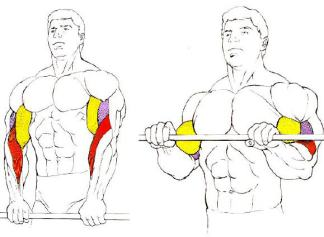

Welcome to Ejercicios efectivos de tríceps
Los mejores ejercicios de tríceps que puedes realizar en el gimnasio, para ganar volumen en tus brazos
2021.06.26 19:32Webedia Trendencias Hombre Menú Nuevo Buscar Facebook Twitter TENDENCIAS CALZADO FITNESS Fitness
Los mejores ejercicios de tríceps que puedes realizar en el gimnasio, para ganar volumen en tus brazos
Compartir Los mejores ejercicios de tríceps que puedes realizar en el gimnasio, para ganar volumen en tus brazos
Facebook Twitter Flipboard EmailSuscríbete a Trendencias Hombre
Síguenos Twitter Facebook RSS Sin comentarios 28 febrero 2019, 13:00 Gabriela GottauLos tríceps son un músculo de pequeño tamaño que frecuentemente queda relegado al trabajo del bíceps, el músculo más visible y el que jamás olvidamos. Sin embargo, si queremos ganar volumen en los brazos su fortalecimiento e hipertrofia resulta clave , por eso dejamos los mejores ejercicios de tríceps que puedes realizar en el gimnasio .
Fondos en paralelas
Entre las opciones más efectivas para trabajar tríceps se encuentra este ejercicio que podemos realizar entre dos bancos: los clásicos dippings , o bien, en máquina de paralelas .
En Trendencias Hombre Tres ejercicios en casa para trabajar tus brazos al completo y sin equipoLos fondos en paralelas son más inestables, los tríceps deben vencer la fuerza de gravedad y movilizar todo el peso del cuerpo de forma controlada, por ello, resultan una opción intensa y desafiante para los músculos de los brazos que nos permitirán su desarrollo.
En el siguiente vídeo puedes ver la técnica de ejecución :
Es fundamental que los codos siempre se flexionen por los lados del cuerpo , sin separarse del mismo para trabajar específicamente os tríceps con la realización de este ejercicio.
Press francés
Este movimiento se realiza en banco plano, con mancuernas o barra entre las manos .
En Trendencias Hombre Desarrolla tus brazos trabajando tríceps con TRXTumbados boca arriba, con toda la espalda apoyada en el banco, debemos colocar los brazos perpendiculares al torso y descender por detrás de la cabeza, flexionando los codos, el peso cargado en las manos como se muestra a continuación:
Al igual que en el ejercicio anterior, en el press francés resulta fundamental mantener los codos cerca de la cabeza y que los mismos no se abran para trabajar mayormente el tríceps .
Extensiones de tríceps en polea alta
En máquina de polea alta podemos realizar una extensión de tríceps, con manillar como nos muestran en Vitónica o bien, con cuerda como se puede ver en el siguiente vídeo:
Con esta última opción podemos solicitar en mayor medida la porción externa del tríceps o lo que es igual, el lateral del brazo, de allí que su trabajo sea de utilidad para ganar volumen en las extremidades superiores .
También podemos realizar extensiones de tríceps en polea alta, con agarre invertido , es decir, sujetando el manillar de manera tal que las palmas miren hacia arriba. Con este ejercicio se trabaja además del tríceps, antebrazos, permitiendo así dar forma a los brazos en conjunto.
En Trendencias Hombre Conoce las mejores máquinas para ejercitar tus brazos en el gimnasioExtensiones verticales de brazos con mancuernas
Las extensiones de brazos o tríceps son una opción muy frecuente para trabajar este músculo, y además de la sugerida antes que se realiza en máquina de poleas, recomendamos esta alternativa de extensiones verticales de brazos con mancuernas.
Se realiza de forma alternada, por lo que es un movimiento unilateral en que cada tríceps trabaja por separado. Se puede ejecutar de pie o sentado en un banco y la mancuerna sujeta en una de las manos debe descender por detrás de la nuca debido a flexión de los brazos y consiguiente extensión como se puede ver en el siguiente vídeo:
Aunque puede realizarse también con ambos brazos , usando mancuernas o barra, recomendamos su realización de forma unilateral y alternada para concentrar el esfuerzo en uno de los tríceps durante su ejecución.
Ya sabes, si quieres ganar volumen en tus brazos, estos son los mejores ejercicios para tríceps que puedes realizar en el gimnasio y que te ayudarán a ver en tu cuerpo los resultados que siempre has deseado.
Vídeo | Manferrui5 , SportCityMexico , Rodrigo Bermejo , Simon Alvarez
Imagen | iStock
Vitónica en Instagram
Seguir
Compartir Los mejores ejercicios de tríceps que puedes realizar en el gimnasio, para ganar volumen en tus brazos
Facebook Twitter Flipboard E-mail Temas Fitness gimnasio musculación entrenamiento ejercicios BrazosCompartir
Facebook Twitter Flipboard E-mail Comentarios cerrados Temas de interés ejercicios de espalda moda hombre 2019 ejercicios abdomen dress code ejercicios triceps calorías en un kilo zapatos de moda hombre comer después de entrenar Zara Primark Mango caipiriña piña colada Inicio Chicas Lifestyle Calzado Estilo de la semana Tendencias Fitness Cosmética El mejor street-style de la semana Ideas para el Día del Padre moda hombre entrenamiento abdominalesVer más temas
Síguenos Twitter Facebook RSS E-mail Lo mejor Equipo editorial Contacta con nosotrosMás sitios que te gustarán
Xataka Applesfera Xataka Android Vitónica PoprosaExplora en nuestros medios
Tecnología Móviles, tablets, aplicaciones, videojuegos, fotografía, domótica Xataka Xataka Móvil Xataka Foto Xataka Android Xataka Smart Home Xataka Windows Xataka Ciencia Applesfera Genbeta Magnet Mundo Xiaomi Videojuegos Consolas, juegos, PC, PS4, Switch, Nintendo 3DS y Xbox 3DJuegos Vida Extra IGN Millenium Entretenimiento Series, cine, estrenos en cartelera, premios, rodajes, nuevas películas, televisión Sensacine Espinof Gastronomía Recetas, recetas de cocina fácil, pinchos, tapas, postres Directo al Paladar Estilo de vida Moda, belleza, estilo, salud, fitness, familia, gastronomía, decoración, famosos Vitónica Trendencias Trendencias Hombre Decoesfera Compradiccion Poprosa Latinoamérica Publicaciones de México Xataka México Directo al Paladar México Sensacine México 3DJuegos México Aviso legal Condiciones de uso Condiciones de uso de cookies Publicidad InicioReciente
Las prendas más destacables del desfile de Dior primavera-verano 2022 Las rebajas son también para la tecnología: 23 gadgets que puedes conseguir con descuento para estrenar móvil, portátil, smartwatch este verano en Trendencias Éstas son nuestras prendas favoritas de las rebajas de Zara para sumar ya mismo a la cesta de compra Por qué el tamaño del pene no nos importa, aunque un estudio diga ahora que la media ya no es de 15 centímetros en Trendencias Los protectores solares que no pican en los ojos y resisten los deportes náuticos De rebajas en El Corte Inglés: las once piezas que necesitas sí o sí para llenar tu armario de básicos a precios únicos Vuelve ‘Sky Rojo’, se estrena ‘La calle del terror’ y mucho más: todas las series, películas y documentales de Netflix en julio de 2021 en Trendencias Louis Vuitton presenta su colección de primavera 2022 'Amen Break' debutando una nueva colaboración con Nike Ralph Lauren debuta en el mundo de los e-sports vistiendo a los miembros del G2 team Nueve zapatillas de adidas originals para aprovechar sus rebajas de hasta con un 50% Lo mejor de las rebajas de Springfield con éstas nueve piezas para veranear con estilo Rebajas en H&M: nuestra selección de las mejores piezas con descuento del momento Las camisas estampadas imponen su ley en las calles de Milán Siete piezas de JOMA que encontrarás en el Prime Day de Amazon por menos de 15 euros Últimas horas del Prime Day en Amazon: la sandwichera de Taurus para preparar los bocadillos más deliciosos por menos de 18 euros en Directo al Paladar Las grasas pueden ayudarte a perder peso: cuáles elegir para facilitar el adelgazamiento Armani, Polo Club, Hackett tus sudaderas y jerséis favoritos serán de marca premium con éstas ofertas del Prime Day de Amazon Los más bonitos relojes de Fossil, Michael Kors, Armani y más marcas top a un precio de lujo en el Prime Day de Amazon Jack & Jones, Tommy Hilfiger, BOSS y más marcas de ropa interior a precio increíble en el Prime Day de Amazon Chaquetas, cortavientos, polares y sudaderas de Helly Hansen a precios súper rebajados en el Amazon Prime Day 2021Ver más artículos
Síguenos Twitter Facebook RSSEn Trendencias Hombre hablamos de
Chicas Lifestyle Calzado Estilo de la semana Tendencias Fitness Cosmética El mejor street-style de la semana Ideas para el Día del Padre moda hombre entrenamiento abdominalesVer más temas
SubirWebedia
Tecnología
Xataka Xataka Móvil Xataka Foto Xataka Android Xataka Smart Home Xataka Windows Xataka Ciencia Applesfera Genbeta Magnet Mundo XiaomiVideojuegos
3DJuegos Vida Extra IGN MilleniumEntretenimiento
Sensacine EspinofGastronomía
Directo al PaladarEstilo de vida
Vitónica Trendencias Trendencias Hombre Decoesfera Compradiccion PoprosaLatinoamérica
Xataka México 3DJuegos México Sensacine México Directo al Paladar México Webedia Xataka Vida Extra Espinof Genbeta Directo al Paladar Xataka Ciencia Trendencias Applesfera Xataka Móvil Decoesfera Vitónica Xataka Foto Trendencias Hombre Xataka Android Xataka Smart Home Xataka Windows Magnet Compradiccion 3DJuegos Sensacine IGN Millenium Poprosa Mundo XiaomiTecnología
Xataka Xataka Móvil Xataka Foto Xataka Android Xataka Smart Home Xataka Windows Xataka Ciencia Applesfera Genbeta Magnet Mundo XiaomiVideojuegos
3DJuegos Vida Extra IGN MilleniumEntretenimiento
Sensacine EspinofGastronomía
Directo al PaladarEstilo de vida
Vitónica Trendencias Trendencias Hombre Decoesfera Compradiccion Poprosa